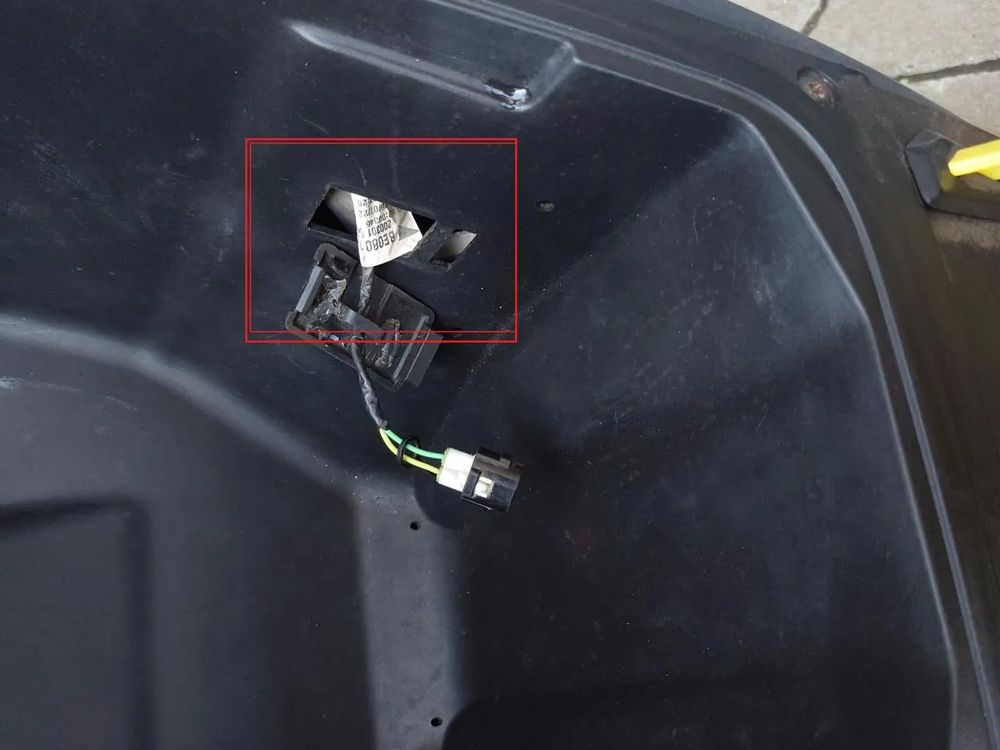
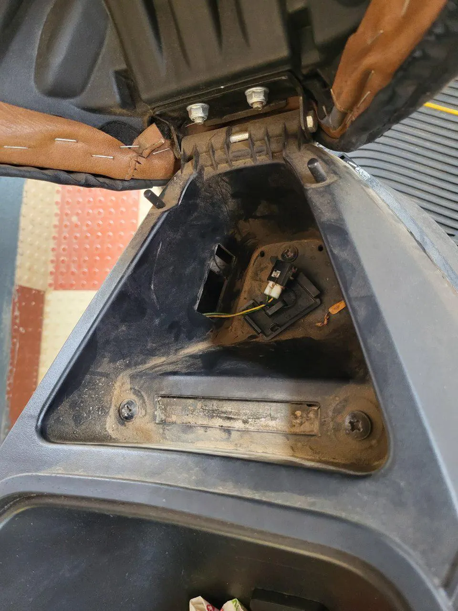
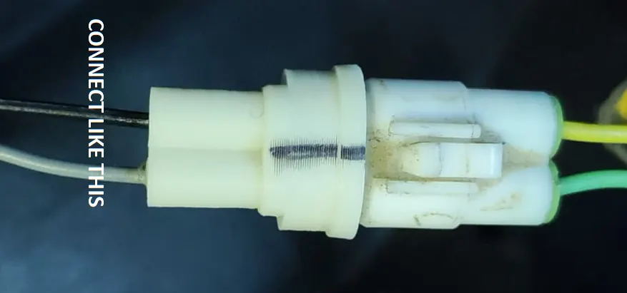
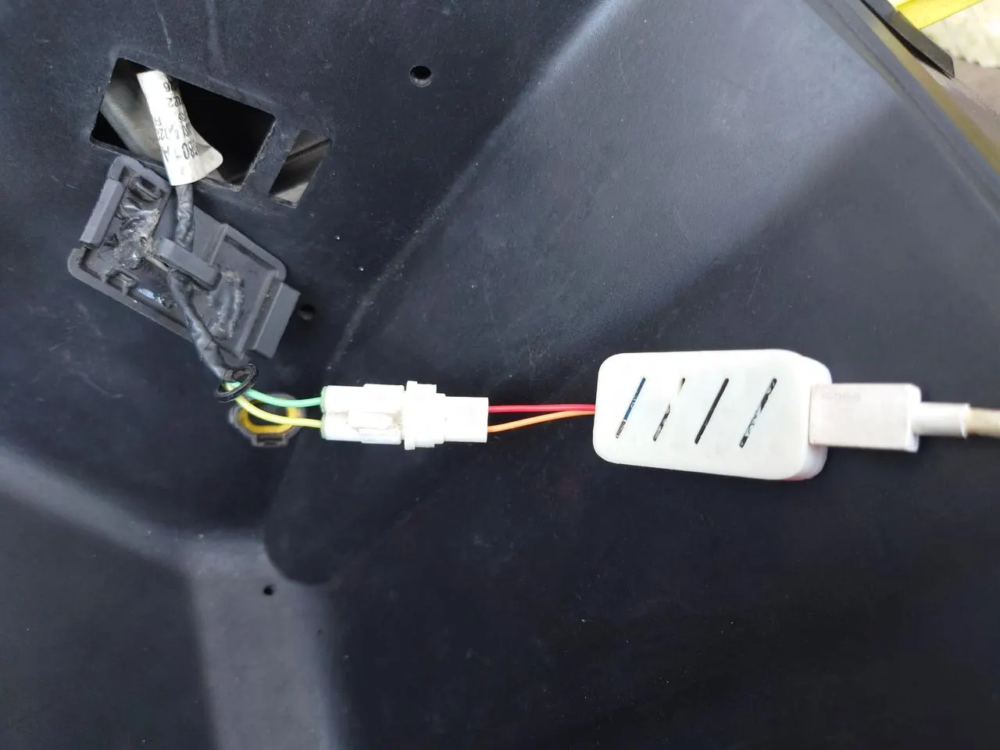

Every Ather owner eventually asks the same question: how healthy is my battery, really? The app shows charge and range, but not the one number that matters most — the battery's State of Health (SOH). This guide walks you through a complete Ather battery health check at home: what SOH means, what you need, the exact steps, and how to read every number on screen.
It takes about 10 minutes, works on the Ather 450X, 450S, 450 Plus, 450 Apex and all Rizta models — and once you've done it once, repeat checks take two minutes.
In this guide
What is Ather battery health (SOH)?
State of Health (SOH) is the percentage of original battery capacity your pack can still hold. A brand-new Ather battery is at 100% SOH; a pack that has lost a fifth of its usable capacity reads around 80%. It is the honest, measured number behind the range you see every day — and it is the number Ather's battery warranty is written around: the pack is covered while it stays at or above 70% SOH during the cover period.
SOH drops for normal reasons — age, charge cycles, hot summers, frequent fast charging and long periods parked at 100%. The drop is gradual and normal. What matters is the rate of change: a pack that loses a few percent over a year is healthy, while one that drops several percent in a few months usually has a weak cell group and is worth investigating early.
The catch is that Ather does not show SOH in its app. Service centres read it over the scooter's CAN bus — and most owners are never shown the number. A-OBD plugs into that same diagnostic port and displays it on your phone, so you always know where your battery actually stands.
What you need for the check
- An A-OBD reader — the ESP32-C3 (₹949, best for quick checks) or the ESP32/WROOM (₹1150, stays cooler for longer sessions and adds offline logging). Both read the same data.
- A phone or tablet — any device with a browser. Nothing to install, no app, no account.
- A power bank or USB-C charger — the reader is powered over USB-C, not from the scooter.
- Your Ather scooter with the key available — or a charging session, which also powers the diagnostic port.
No subscription, no service centre appointment, no special tools. The reader is pre-assembled and pre-flashed, so it works out of the box.
How to check Ather battery health — step by step
Turn the scooter's key on before connecting anything. The OBD port is only powered while the scooter is on — or while it is charging, in which case you can leave the key off.
Open the boot and lift the small cover to reach the diagnostic port. On the 450 series and on Rizta the port sits in the same place under the boot mat.


Connect the A-OBD reader directly to the port. The marked line on the connector must face the top side, exactly as shown below.


Connect the reader to a power bank or any USB-C charger. A red LED confirms it is powered.
No red LED? Try a different USB-C cable (some cables are charge-only) and a different power source.
Join the Wi-Fi network named Ather-OBD — password 12345678. The network usually appears 5–10 seconds after the red LED lights up. If it hasn't appeared after about 20 seconds, unplug and replug the USB-C cable.
Open http://192.168.4.1 in your phone browser and wait about 10 seconds. The live dashboard loads with your real battery SOH, per-cell voltages, cell imbalance and 40+ live values — all read directly from the BMS.
What your Ather battery readings mean
State of Health
Capacity remaining vs new. Above 90% is excellent, 80–90% is normal for a few years of use, and near 70% is the warranty threshold — act before you cross it.
Per-cell voltage
Every cell group's voltage and charge. One cell sitting noticeably lower than the rest points to a weak group — often the cause of sudden range drops.
Cell imbalance
The gap between the strongest and weakest cell. Small gaps are normal; an imbalance above about 0.3 is worth showing to a service centre.
Beyond the battery, the dashboard also shows charger input/output, motor temperature, odometer, drive modes and live charts — useful for spotting a charger that is under-delivering or a motor running hot before it becomes a bigger problem.
Which Ather models are supported
The OBD port and CAN data are the same across current Ather models, so the process above works on:
- Ather 450X, 450S, 450 Plus and 450 Apex
- Ather Rizta Z, Rizta S and Rizta X
- Both the 2.9 kWh and 3.7 kWh battery variants
Every Ather model is supported — except Gen 1, Gen 1.5 and Gen 2. Checking an Ather 450X battery health before a long trip, doing a Rizta battery health check before buying a used scooter, or hunting down cell imbalance on a 450S all use the same three steps: plug in, connect, read.
When should you visit an Ather service centre?
A-OBD tells you what is happening — the service centre fixes it. Book a visit if you see any of these:
- SOH near or below 70% while the battery is still under warranty — bring screenshots of your readings as evidence.
- Cell imbalance above about 0.3, especially if it grows between checks.
- Sharp, sudden range drops that don't match your riding or the weather.
- Charge percentage jumping erratically, or the scooter shutting down earlier than the displayed charge suggests.
- The same BMS warnings reappearing after a reset.
Ather's battery warranty (Pro Pack / Battery Protect) guarantees 70% SOH or above during the cover period — knowing your real number early is what turns a vague "range feels low" complaint into a clear, evidence-backed claim. For anything else, our contact page is the fastest way to reach us.
How often should you check Ather battery health?
- First check: soon after delivery, to record a baseline (note that readings are less reliable in the first 10,000 km while the pack settles).
- Routine checks: every 5,000 km or every six months — whichever comes first. Each check takes about two minutes once you've done it once.
- Before buying or selling a used Ather — SOH is the single most valuable number in a second-hand sale.
- After a hard summer or a long period parked at full charge, since heat and high state of charge are the two fastest ways to age a pack.
Ather battery health check — FAQ
Turn the key on, plug the A-OBD reader into the OBD port in the boot, power it from a power bank or charger, connect your phone to the Ather-OBD Wi-Fi (password 12345678) and open http://192.168.4.1. Your real SOH and per-cell data appear in about 10 seconds.
A new Ather pack starts at 100% SOH. Above 90% is excellent, 80–90% is typical after a few years, and Ather's battery warranty covers the pack while it stays at or above 70% during the cover period. A sudden drop of several percent in a short time is worth investigating.
No — the app shows charge, range and ride stats, but not State of Health. SOH is read over the scooter's CAN bus, which is what service centres use. A-OBD reads the same data directly and shows you the percentage yourself.
With A-OBD it is a one-time purchase (₹949 for the C3 or ₹1150 for the WROOM, plus ₹175 flat shipping) and you can check as often as you like — no subscription and no service centre appointment.
Yes. The port and CAN data are the same across the 450X, 450S, 450 Plus, 450 Apex and Rizta Z / S / X, including both 2.9 kWh and 3.7 kWh variants. Only Gen 1, Gen 1.5 and Gen 2 are not supported.
The voltage difference between the weakest and strongest cell group. As cells age they drift apart, which shows up as uneven range drop. A-OBD displays every cell's voltage — an imbalance above about 0.3 is a good reason to visit a service centre.
Ather notes that SOH readings are less reliable in the first 10,000 km while the pack settles. The number is still useful as a baseline — record it once and track how it changes.
No. A-OBD is a purely passive reader — it only listens to CAN data and never sends commands or changes anything. Nothing is spliced or cut, so it does not void the warranty.
Check your Ather battery health this week
A-OBD is pre-assembled, pre-flashed and 100% plug & play. Order the ESP32-C3 for quick checks or the ESP32/WROOM for longer sessions — both read SOH, per-cell data and 40+ live values.